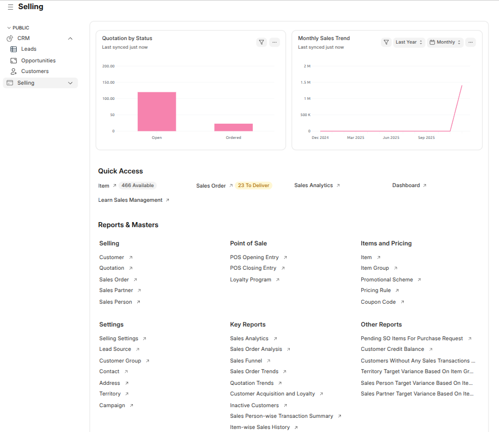

Selling Workspace
Selling Workspace Overview
Path: Selling
The Selling workspace provides a consolidated view of quotation
status, sales trends, quick operational access, and detailed reports required
to manage the complete sales cycle.

Note: All charts, shortcuts, and links are displayed based on
user roles and permissions. The workspace can be customized based on business needs.
Quotation by Status
This chart displays the number of quotations grouped by their current status
such as Open and Ordered.
- Helps track quotation progress
- Identifies conversion from quotation to order
Monthly Sales Trend
This chart shows sales performance over time, grouped monthly for the selected year.
It helps analyze revenue growth and seasonal trends.
- Supports sales forecasting
- Identifies revenue growth patterns
Quick Access
The Quick Access section provides direct links to commonly
used selling operations.
- Item – View available items
- Sales Order – View sales orders pending delivery
- Sales Analytics – Analyze sales performance
- Dashboard – View selling dashboards
- Learn Sales Management – Access learning resources
Reports & Masters
Selling
- Customer
- Quotation
- Sales Order
- Sales Partner
- Sales Person
Point of Sale
- POS Opening Entry
- POS Closing Entry
- Loyalty Program
Items and Pricing
- Item
- Item Group
- Promotional Scheme
- Pricing Rule
- Coupon Code
Settings
- Selling Settings
- Lead Source
- Customer Group
- Contact
- Address
- Territory
- Campaign
Key Reports
- Sales Analytics
- Sales Order Analysis
- Sales Funnel
- Sales Order Trends
- Quotation Trends
- Customer Acquisition and Loyalty
- Inactive Customers
- Sales Person-wise Transaction Summary
- Item-wise Sales History
Other Reports
- Pending SO Items for Purchase Request
- Customer Credit Balance
- Customers Without Any Sales Transactions
- Territory Target Variance Based on Item Group
- Sales Person Target Variance Based on Item
- Sales Partner Target Variance Based on Item
Note: Access to reports and masters is controlled through
role-based permissions.
Dashboards
Path: Click on Dashboard in Quick Access
Dashboards provide visual insights into sales performance, quotation trends,
and order execution.
- Available in list view for Quotations and Sales Orders
- Supports Dashboard, Kanban, and Image views